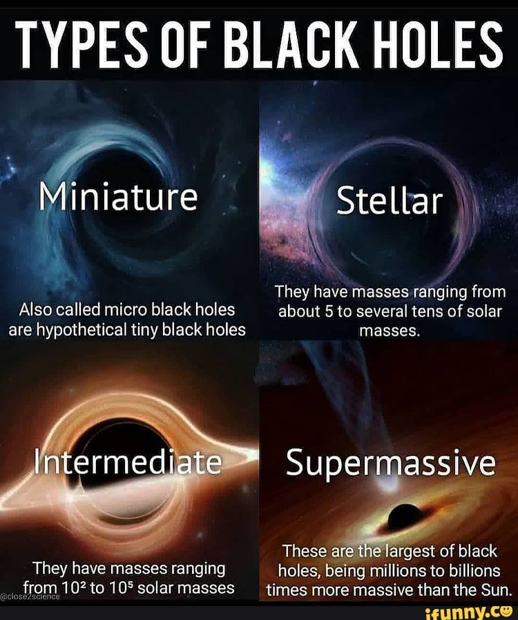
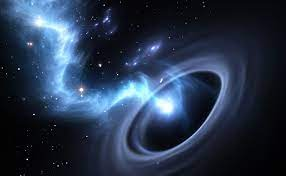

about black holes
.jpg)
black holes
About
A black hole is a region of spacetime where gravity is so strong that nothing—no particles or even electromagnetic radiation such as light—can escape from it. The theory of general relativity predicts that a sufficiently compact mass can deform spacetime to form a black hole. The boundary of no escape is called the event horizon. Although it has an enormous effect on the fate and circumstances of an object crossing it, according to general relativity it has no locally detectable features. In many ways, a black hole acts like an ideal black body, as it reflects no light. Moreover, quantum field theory in curved spacetime predicts that event horizons emit Hawking radiation, with the same spectrum as a black body of a temperature inversely proportional to its mass. This temperature is on the order of billionths of a kelvin for black holes of stellar mass, making it essentially impossible to observe directly.
black holes(2)
Objects whose gravitational fields are too strong for light to escape were first considered in the 18th century by John Michell and Pierre-Simon Laplace. The first modern solution of general relativity that would characterize a black hole was found by Karl Schwarzschild in 1916, and its interpretation as a region of space from which nothing can escape was first published by David Finkelstein in 1958. Black holes were long considered a mathematical curiosity; it was not until the 1960s that theoretical work showed they were a generic prediction of general relativity. The discovery of neutron stars by Jocelyn Bell Burnell in 1967 sparked interest in gravitationally collapsed compact objects as a possible astrophysical reality. The first black hole known as such was Cygnus X-1, identified by several researchers independently in 1971.
black holes(3)
Black holes of stellar mass form when very massive stars collapse at the end of their life cycle. After a black hole has formed, it can continue to grow by absorbing mass from its surroundings. By absorbing other stars and merging with other black holes, supermassive black holes of millions of solar masses (M☉) may form. There is consensus that supermassive black holes exist in the centers of most galaxies.
black holes(4)
The presence of a black hole can be inferred through its interaction with other matter and with electromagnetic radiation such as visible light. Matter that falls onto a black hole can form an external accretion disk heated by friction, forming quasars, some of the brightest objects in the universe. Stars passing too close to a supermassive black hole can be shred into streamers that shine very brightly before being "swallowed." If there are other stars orbiting a black hole, their orbits can be used to determine the black hole's mass and location. Such observations can be used to exclude possible alternatives such as neutron stars. In this way, astronomers have identified numerous stellar black hole candidates in binary systems, and established that the radio source known as Sagittarius A*, at the core of the Milky Way galaxy, contains a supermassive black hole of about 4.3 million solar masses.
black holes(5)
On 11 February 2016, the LIGO Scientific Collaboration and the Virgo collaboration announced the first direct detection of gravitational waves, which also represented the first observation of a black hole merger. As of December 2018, eleven gravitational wave events have been observed that originated from ten merging black holes (along with one binary neutron star merger). On 10 April 2019, the first direct image of a black hole and its vicinity was published, following observations made by the Event Horizon Telescope (EHT) in 2017 of the supermassive black hole in Messier 87's galactic centre. In March 2021, the EHT Collaboration presented, for the first time, a polarized-based image of the black hole which may help better reveal the forces giving rise to quasars.
black holes(6)
Blackness of space with black marked as center of donut of orange and red gases, the supermassive black hole at the core of supergiant elliptical galaxy Messier 87, with a mass about 7 billion times that of the Sun, as depicted in the first false-colour image in radio waves released by the Event Horizon Telescope (10 April 2019). Visible are the crescent-shaped emission ring and central shadow, which are gravitationally magnified views of the black hole's photon ring and the photon capture zone of its event horizon. The crescent shape arises from the black hole's rotation and relativistic beaming; the shadow is about 2.6 times the diameter of the event horizon.
black holes(6)
Blackness of space with black marked as center of donut of orange and red gases, the supermassive black hole at the core of supergiant elliptical galaxy Messier 87, with a mass about 7 billion times that of the Sun, as depicted in the first false-colour image in radio waves released by the Event Horizon Telescope (10 April 2019). Visible are the crescent-shaped emission ring and central shadow, which are gravitationally magnified views of the black hole's photon ring and the photon capture zone of its event horizon. The crescent shape arises from the black hole's rotation and relativistic beaming; the shadow is about 2.6 times the diameter of the event horizon.
black holes(7)
As of 2021, the nearest known body thought to be a black hole is around 1500 light-years away (see List of nearest black holes). Though only a couple dozen black holes have been found so far in the Milky Way, there are thought to be hundreds of millions, most of which are solitary and do not cause emission of radiation, so would only be detectable by gravitational lensing.
about black holes
-
types black hole
There are four types of black holes: stellar, intermediate, supermassive, and miniature. The most commonly known way a black hole forms is by stellar death. As stars reach the ends of their lives, most will inflate, lose mass, and then cool to form white dwarfs.
-
formation of a black hole
Most black holes form from the remnants of a large star that dies in a supernova explosion. (Smaller stars become dense neutron stars, which are not massive enough to trap light.) ... When the surface reaches the event horizon, time stands still, and the star can collapse no more - it is a frozen collapsing object.